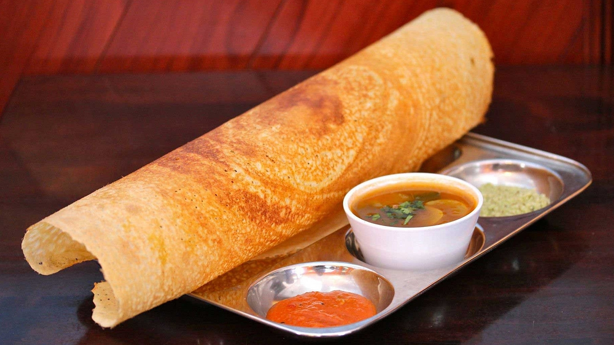
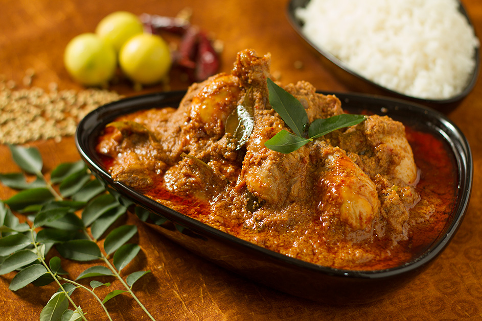
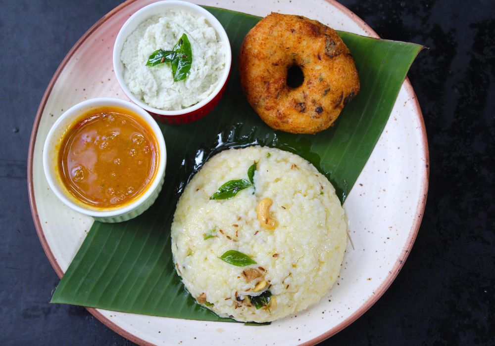

Tamil Nadu Cuisine
Delicacies of Tamil Nadu
Tamil Nadu is famous for its rich and flavorful cuisine, characterized by a variety of spices, fresh ingredients, and traditional cooking methods. The cuisine is predominantly vegetarian but also includes a range of non- vegetarian dishes, influenced by the coastal regions.
Dosa and Idli
Dosa and Idli are staple breakfast items made from fermented rice and lentils. They are served with coconut chutney and sambar.

Sambar and Rasam
Sambar, a lentil-based stew with vegetables and tamarind, and Rasam, a spiced tamarind soup, are essential parts of Tamil cuisine.

Chettinad Cuisine
Chettinad cuisine is famous for its bold flavors and spicy curries. Chettinad Chicken Curry is a well-known dish

Pongal
Pongal is a traditional rice dish cooked with ghee, black pepper, and moong dal, commonly prepared during the Pongal festival.
